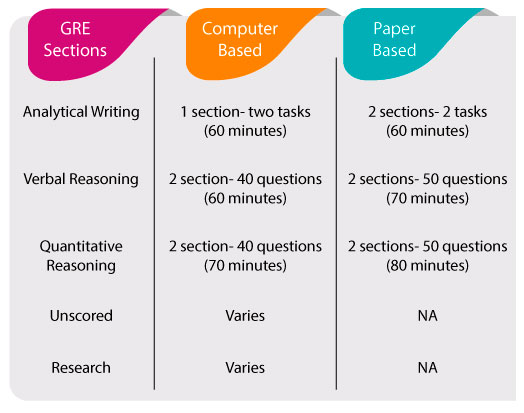

Blogpost About GRE
April 24,2020
What is GRE?
The Graduate Record Examination, or GRE, is an important step in the graduate school or business school application process. The GRE is a multiple-choice, computer-based, standardized exam that is often required for admission to graduate programs and graduate business programs (MBA) globally.
WHAT ARE THE GRE SECTIONS?
You will receive three scores on the GRE:
- Analytical Writing
- Verbal Reasoning
- Quantitative Reasoning
- 1 Analytical Writing Assessment section
- 2 Verbal Reasoning sections
- 2 Quantitative Reasoning sections
- Unscored (may be either Verbal Reasoning or Quantitative Reasoning)
- Research (used for ETS research purposes)
The Quantitative Reasoning and Verbal Reasoning sections are each scored on a scale of 130 to 170. The mean score for Verbal Reasoning is 151, and the mean score for Quantitative Reasoning is 153. The Analytical Writing Assessment is scored from 0 to 6 in half-point increments, and the mean score is 4.0. 
Who Takes It?
Prospective graduate and business school applicants from all around the world who are interested in pursuing a master's, specialized master's in business, MBA, J.D. degree, or doctoral degree take the GRE General Test. Applicants come from varying educational and cultural backgrounds and the GRE General Test provides schools with a common measure for comparing candidates' qualifications. GRE scores are used by admissions or fellowship panels to supplement your undergraduate records, recommendation letters and other qualifications for graduate-level study.
WHAT IS A GOOD GRE SCORE?
When considering your GRE score goal, look at the requirements—or minimums, if applicable—at the graduate or business programs to which you’re applying. This will let you know your score baseline. If you can find the mean or average GRE score of admitted applicants, you’ll be able to determine what GRE score will make you a competitive applicant.The Verbal and Quant sections of the GRE are each scored from 130 to 170. The mean score for Verbal Reasoning is 151, and the mean score for Quantitative Reasoning is 153. The Analytical Writing Assessment is scored from 0 to 6 in half-point increments, and the mean score is 4.0.
HOW LONG IS THE GRE?
On GRE Test Day, you can expect to sit for the exam for approximately four hours, including test-taking time and short breaks. Note that this time does not include your check-in time at the testing center. It is important to be on time and fully prepared. ETS recommends that you arrive at the testing center at least 30 minutes before your test time.